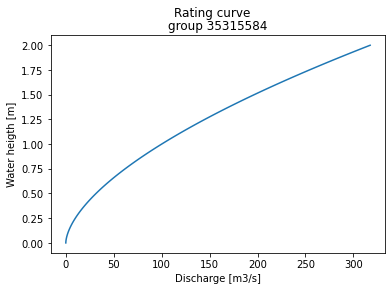
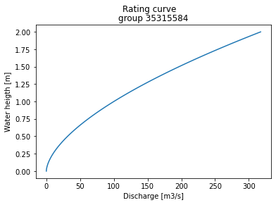
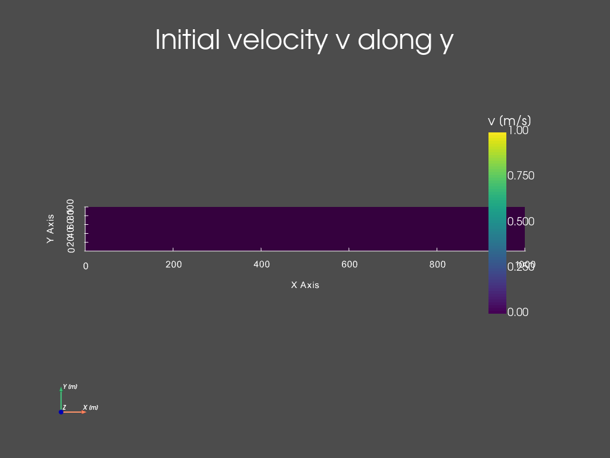
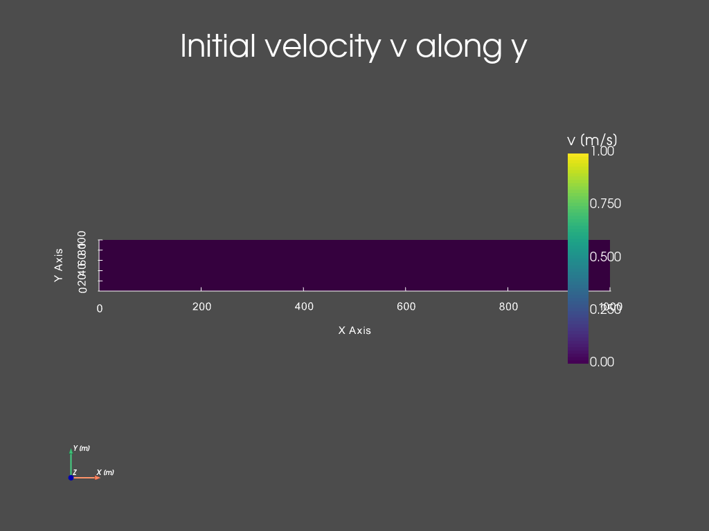

Forward run (simple channel “q_in”)#
This tutorial details how to perform a direct/forward run with dassflow2d on a simple channel case provided in the package.
#####################################################################
#####################################################################
# PERFORM A DIRECT SIMULATION WITH DASSFLOW2D
# LAKE AT REST
#
# Introduction to basic commands of run and visualisation of results
#####################################################################
#####################################################################
#=======================================================#
# Source librairies
#=======================================================#
import dassflow2d as df2d
import os
import numpy as np
import matplotlib
import matplotlib.pyplot as plt
#=======================================================#
# copy of case files
#=======================================================#
os.chdir('../../')
dassflow_dir = os.getcwd() # DassFlow directory (you can also impose your absolute path)
os.chdir(dassflow_dir)
print("DassFlow directory is: ", dassflow_dir)
# Define directory where case is run
# (its name 'bin_A' is imposed in {dassflow_dir}/code/makefile.inc : CASEDIR='bin_A')
run_dir = f"{dassflow_dir}/code/bin_A/"
# Define directory containing case data
case_data_dir = f"{dassflow_dir}/cases/tuto_case/2_qin/bin_A/"
# Clean run directory
os.system(f"rm -r {run_dir}*")
# Copy case data to runing directory
os.system(f"cp -r {case_data_dir}* {run_dir}") # Copy of case files from existing case to bin_A
os.system(f"cp {run_dir}/hydrograph_target.txt {run_dir}/hydrograph.txt") # Copy a "real-like" hydrograph into hydrographt.txt used as inflow
# Move to
os.chdir( f"{dassflow_dir}/code/")
os.system("make cleanres cleanmin") # Clean forward run and minimization results
DassFlow directory is: /home/pagarambois/Documents/Distant/dassflow2d_git_/dassflow2d
make[1]: Entering directory '/home/pagarambois/Documents/Distant/dassflow2d_git_/dassflow2d/code'
rm -rf ./bin_A/res/*
rm -rf ./bin_A/graph/*
rm -rf ./bin_A/min/*
make[1]: Leaving directory '/home/pagarambois/Documents/Distant/dassflow2d_git_/dassflow2d/code'
0
#=======================================================#
# initialization
#=======================================================#
# Creation of dassflowmodel object using case data:
my_model = df2d.dassflowmodel(bin_dir = f"{dassflow_dir}/code/bin_A", hdf5_path = f"{dassflow_dir}/code/bin_A/res/simu.hdf5" , run_type = "direct", clean = True)
# Initializion of the Fortran kernel (dassflow Python library is obtained by wrapping Fortran source code)
#initialise all fortran kernel values and source them into dassflowmodel object
my_model.init_all()
my_model.kernel.dof.h[:] = my_model.kernel.dof0.h[:]=1
clean= True
call dassflow2d.wrapping.m_mesh.msh()
call dassflow2d.wrapping.call_model.init_solver(self.kernel)
call Meshing(mesh_fortran = self.kernel.mesh)
================================================================================
* Mesh Loading *
================================================================================
mesh%file_namechannel.geo
INTO calc_cells_connectivity
STEP 1 DONE
OUT calc_cells_connectivity
INLET 9 1
OUTLET 9 1
================================================================================
* Mesh Loading is OK *
================================================================================
Read_Dass_Mesh OK --> go out
call Read_Dass_Mesh( mesh ) done
call Mesh_Partition_Scotch( mesh )
call Mesh_Geometric_Properties( mesh )
done mesh input
call Machine_Number_Limits
DONE Machine_Number_Limits
********************************************************************************
range = 307
precision = 15
zerom = 1.0730891E-16
pinfm = 9.4967820E+15
minfm = -9.4967820E+15
hugem = 1.7976931+308
tinym = 2.2250739-308
********************************************************************************
call Init_Linear_Solver(mdl%mesh)
done Init_Linear_Solver(mdl%mesh)
First let us have a look to the case mesh and boundary conditions (BCs)
# Plot the mesh and BCs
plotter = my_model.boundary.plot(what="meshing", notebook=True) # for a local run remove notebook option or set notebook=False
plotter.show(jupyter_backend='trame') # remove jupyter_backend if needed
plotter = my_model.boundary.plot(what="values", notebook=True) # for a local run remove notebook option or set notebook=False
 

#=======================================================#
# Run Fortran kernel
#=======================================================#
my_model.run()
================================================================================
* Running Shallow-Water Model in direct mode *
================================================================================
================================================================================
* Writing Result File *
================================================================================
nt = 149 t = 1.44103E+02 / 1.44000E+04 ( 1.0 % ) , dt = 9.815178E-01
nt = 296 t = 2.88233E+02 / 1.44000E+04 ( 2.0 % ) , dt = 9.803240E-01
nt = 443 t = 4.32597E+02 / 1.44000E+04 ( 3.0 % ) , dt = 9.836336E-01
nt = 589 t = 5.76388E+02 / 1.44000E+04 ( 4.0 % ) , dt = 9.859368E-01
nt = 735 t = 7.20451E+02 / 1.44000E+04 ( 5.0 % ) , dt = 9.873989E-01
nt = 881 t = 8.64682E+02 / 1.44000E+04 ( 6.0 % ) , dt = 9.882774E-01
nt = 1026 t = 1.00802E+03 / 1.44000E+04 ( 7.0 % ) , dt = 9.887837E-01
nt = 1172 t = 1.15241E+03 / 1.44000E+04 ( 8.0 % ) , dt = 9.890718E-01
nt = 1318 t = 1.29683E+03 / 1.44000E+04 ( 9.0 % ) , dt = 9.892302E-01
nt = 1463 t = 1.44027E+03 / 1.44000E+04 ( 10.0 % ) , dt = 9.893134E-01
nt = 1609 t = 1.58471E+03 / 1.44000E+04 ( 11.0 % ) , dt = 9.893533E-01
nt = 1754 t = 1.72817E+03 / 1.44000E+04 ( 12.0 % ) , dt = 9.893651E-01
nt = 1900 t = 1.87262E+03 / 1.44000E+04 ( 13.0 % ) , dt = 9.893556E-01
nt = 2045 t = 2.01607E+03 / 1.44000E+04 ( 14.0 % ) , dt = 9.893252E-01
nt = 2191 t = 2.16051E+03 / 1.44000E+04 ( 15.0 % ) , dt = 9.892687E-01
nt = 2337 t = 2.30494E+03 / 1.44000E+04 ( 16.0 % ) , dt = 9.891759E-01
nt = 2482 t = 2.44836E+03 / 1.44000E+04 ( 17.0 % ) , dt = 9.890317E-01
nt = 2628 t = 2.59274E+03 / 1.44000E+04 ( 18.0 % ) , dt = 9.888096E-01
nt = 2773 t = 2.73610E+03 / 1.44000E+04 ( 19.0 % ) , dt = 9.884782E-01
nt = 2919 t = 2.88038E+03 / 1.44000E+04 ( 20.0 % ) , dt = 9.879841E-01
nt = 3065 t = 3.02458E+03 / 1.44000E+04 ( 21.0 % ) , dt = 9.872627E-01
nt = 3211 t = 3.16864E+03 / 1.44000E+04 ( 22.0 % ) , dt = 9.862246E-01
nt = 3357 t = 3.31253E+03 / 1.44000E+04 ( 23.0 % ) , dt = 9.847534E-01
nt = 3503 t = 3.45616E+03 / 1.44000E+04 ( 24.0 % ) , dt = 9.827021E-01
nt = 3650 t = 3.60036E+03 / 1.44000E+04 ( 25.0 % ) , dt = 9.786951E-01
================================================================================
* Writing Result File *
================================================================================
nt = 3798 t = 3.74478E+03 / 1.44000E+04 ( 26.0 % ) , dt = 9.727156E-01
nt = 3946 t = 3.88820E+03 / 1.44000E+04 ( 27.0 % ) , dt = 9.651019E-01
nt = 4096 t = 4.03226E+03 / 1.44000E+04 ( 28.0 % ) , dt = 9.554582E-01
nt = 4248 t = 4.17661E+03 / 1.44000E+04 ( 29.0 % ) , dt = 9.436087E-01
nt = 4402 t = 4.32086E+03 / 1.44000E+04 ( 30.0 % ) , dt = 9.293911E-01
nt = 4558 t = 4.46457E+03 / 1.44000E+04 ( 31.0 % ) , dt = 9.128484E-01
nt = 4717 t = 4.60823E+03 / 1.44000E+04 ( 32.0 % ) , dt = 8.940746E-01
nt = 4880 t = 4.75222E+03 / 1.44000E+04 ( 33.0 % ) , dt = 8.721232E-01
nt = 5048 t = 4.89669E+03 / 1.44000E+04 ( 34.0 % ) , dt = 8.478476E-01
nt = 5220 t = 5.04038E+03 / 1.44000E+04 ( 35.0 % ) , dt = 8.231054E-01
nt = 5398 t = 5.18463E+03 / 1.44000E+04 ( 36.0 % ) , dt = 7.980604E-01
nt = 5581 t = 5.32840E+03 / 1.44000E+04 ( 37.0 % ) , dt = 7.735257E-01
nt = 5770 t = 5.47232E+03 / 1.44000E+04 ( 38.0 % ) , dt = 7.498126E-01
nt = 5965 t = 5.61629E+03 / 1.44000E+04 ( 39.0 % ) , dt = 7.272781E-01
nt = 6166 t = 5.76031E+03 / 1.44000E+04 ( 40.0 % ) , dt = 7.062645E-01
nt = 6373 t = 5.90446E+03 / 1.44000E+04 ( 41.0 % ) , dt = 6.869377E-01
nt = 6585 t = 6.04819E+03 / 1.44000E+04 ( 42.0 % ) , dt = 6.695306E-01
nt = 6803 t = 6.19241E+03 / 1.44000E+04 ( 43.0 % ) , dt = 6.540231E-01
nt = 7025 t = 6.33606E+03 / 1.44000E+04 ( 44.0 % ) , dt = 6.405934E-01
nt = 7252 t = 6.48013E+03 / 1.44000E+04 ( 45.0 % ) , dt = 6.291334E-01
nt = 7483 t = 6.62433E+03 / 1.44000E+04 ( 46.0 % ) , dt = 6.197483E-01
nt = 7717 t = 6.76844E+03 / 1.44000E+04 ( 47.0 % ) , dt = 6.123863E-01
nt = 7953 t = 6.91229E+03 / 1.44000E+04 ( 48.0 % ) , dt = 6.070580E-01
nt = 8191 t = 7.05633E+03 / 1.44000E+04 ( 49.0 % ) , dt = 6.036018E-01
nt = 8430 t = 7.20013E+03 / 1.44000E+04 ( 50.0 % ) , dt = 5.998565E-01
================================================================================
* Writing Result File *
================================================================================
nt = 8671 t = 7.34441E+03 / 1.44000E+04 ( 51.0 % ) , dt = 5.978553E-01
nt = 8912 t = 7.48845E+03 / 1.44000E+04 ( 52.0 % ) , dt = 5.978084E-01
nt = 9152 t = 7.63211E+03 / 1.44000E+04 ( 53.0 % ) , dt = 5.996510E-01
nt = 9392 t = 7.77643E+03 / 1.44000E+04 ( 54.0 % ) , dt = 6.033548E-01
nt = 9629 t = 7.92005E+03 / 1.44000E+04 ( 55.0 % ) , dt = 6.089087E-01
nt = 9865 t = 8.06460E+03 / 1.44000E+04 ( 56.0 % ) , dt = 6.163348E-01
nt = 10097 t = 8.20862E+03 / 1.44000E+04 ( 57.0 % ) , dt = 6.255455E-01
nt = 10325 t = 8.35246E+03 / 1.44000E+04 ( 58.0 % ) , dt = 6.363907E-01
nt = 10549 t = 8.49632E+03 / 1.44000E+04 ( 59.0 % ) , dt = 6.482856E-01
nt = 10769 t = 8.64041E+03 / 1.44000E+04 ( 60.0 % ) , dt = 6.619281E-01
nt = 10984 t = 8.78434E+03 / 1.44000E+04 ( 61.0 % ) , dt = 6.771821E-01
nt = 11194 t = 8.92828E+03 / 1.44000E+04 ( 62.0 % ) , dt = 6.939375E-01
nt = 11399 t = 9.07237E+03 / 1.44000E+04 ( 63.0 % ) , dt = 7.120375E-01
nt = 11599 t = 9.21669E+03 / 1.44000E+04 ( 64.0 % ) , dt = 7.312766E-01
nt = 11793 t = 9.36050E+03 / 1.44000E+04 ( 65.0 % ) , dt = 7.514199E-01
nt = 11982 t = 9.50449E+03 / 1.44000E+04 ( 66.0 % ) , dt = 7.723765E-01
nt = 12166 t = 9.64858E+03 / 1.44000E+04 ( 67.0 % ) , dt = 7.939091E-01
nt = 12345 t = 9.79264E+03 / 1.44000E+04 ( 68.0 % ) , dt = 8.157308E-01
nt = 12519 t = 9.93648E+03 / 1.44000E+04 ( 69.0 % ) , dt = 8.375120E-01
nt = 12689 t = 1.00807E+04 / 1.44000E+04 ( 70.0 % ) , dt = 8.590306E-01
nt = 12854 t = 1.02240E+04 / 1.44000E+04 ( 71.0 % ) , dt = 8.780281E-01
nt = 13017 t = 1.03686E+04 / 1.44000E+04 ( 72.0 % ) , dt = 8.958446E-01
nt = 13176 t = 1.05124E+04 / 1.44000E+04 ( 73.0 % ) , dt = 9.119836E-01
nt = 13333 t = 1.06567E+04 / 1.44000E+04 ( 74.0 % ) , dt = 9.264382E-01
nt = 13487 t = 1.08004E+04 / 1.44000E+04 ( 75.0 % ) , dt = 9.389920E-01
================================================================================
* Writing Result File *
================================================================================
nt = 13640 t = 1.09449E+04 / 1.44000E+04 ( 76.0 % ) , dt = 9.497716E-01
nt = 13790 t = 1.10881E+04 / 1.44000E+04 ( 77.0 % ) , dt = 9.586896E-01
nt = 13940 t = 1.12324E+04 / 1.44000E+04 ( 78.0 % ) , dt = 9.660418E-01
nt = 14089 t = 1.13768E+04 / 1.44000E+04 ( 79.0 % ) , dt = 9.719233E-01
nt = 14236 t = 1.15201E+04 / 1.44000E+04 ( 80.0 % ) , dt = 9.764997E-01
nt = 14384 t = 1.16649E+04 / 1.44000E+04 ( 81.0 % ) , dt = 9.800600E-01
nt = 14530 t = 1.18081E+04 / 1.44000E+04 ( 82.0 % ) , dt = 9.826942E-01
nt = 14677 t = 1.19528E+04 / 1.44000E+04 ( 83.0 % ) , dt = 9.846671E-01
nt = 14823 t = 1.20966E+04 / 1.44000E+04 ( 84.0 % ) , dt = 9.860997E-01
nt = 14969 t = 1.22407E+04 / 1.44000E+04 ( 85.0 % ) , dt = 9.871315E-01
nt = 15115 t = 1.23849E+04 / 1.44000E+04 ( 86.0 % ) , dt = 9.878636E-01
nt = 15260 t = 1.25281E+04 / 1.44000E+04 ( 87.0 % ) , dt = 9.883725E-01
nt = 15406 t = 1.26725E+04 / 1.44000E+04 ( 88.0 % ) , dt = 9.887265E-01
nt = 15552 t = 1.28168E+04 / 1.44000E+04 ( 89.0 % ) , dt = 9.889675E-01
nt = 15697 t = 1.29603E+04 / 1.44000E+04 ( 90.0 % ) , dt = 9.891287E-01
nt = 15843 t = 1.31047E+04 / 1.44000E+04 ( 91.0 % ) , dt = 9.892366E-01
nt = 15988 t = 1.32481E+04 / 1.44000E+04 ( 92.0 % ) , dt = 9.893071E-01
nt = 16134 t = 1.33926E+04 / 1.44000E+04 ( 93.0 % ) , dt = 9.893533E-01
nt = 16279 t = 1.35360E+04 / 1.44000E+04 ( 94.0 % ) , dt = 9.893827E-01
nt = 16425 t = 1.36805E+04 / 1.44000E+04 ( 95.0 % ) , dt = 9.894016E-01
nt = 16571 t = 1.38249E+04 / 1.44000E+04 ( 96.0 % ) , dt = 9.894135E-01
nt = 16716 t = 1.39684E+04 / 1.44000E+04 ( 97.0 % ) , dt = 9.894208E-01
nt = 16862 t = 1.41128E+04 / 1.44000E+04 ( 98.0 % ) , dt = 9.894254E-01
nt = 17007 t = 1.42563E+04 / 1.44000E+04 ( 99.0 % ) , dt = 9.894282E-01
nt = 17153 t = 1.44000E+04 / 1.44000E+04 ( 100.0 % ) , dt = 2.218442E-01
================================================================================
* Writing Result File *
================================================================================
================================================================================
* End of run of the Shallow-Water Model in direct mode *
================================================================================
********************************************************************************
Time of simulation = 2.57
********************************************************************************
Performance = 0.17 microsecond / dx / dt / proc
********************************************************************************
>>> Outputs initialized
- Simulation Result files were loaded from : /home/pagarambois/Documents/Distant/dassflow2d_git_/dassflow2d/code/bin_A/res/
The numerical resolution is performed with variable time steps (depending on the CFL condition) and outputs are written at each writting timestep (imposed by the “dtw” parameter).
#=======================================================#
# Vizualize parameters and results
#=======================================================#
First, you can have a look at the bathymetry, friction and initial conditions (of water heigth and free surface height).
# Plot of the 2D bathymetry (input parameter of the 2D shallow water model)
#Plot bathymetry field
plotter = my_model.outputs.result.plot_field(my_mesh = my_model.meshing.mesh_pyvista,
what = "bathy",
title_plot = "Bathymetry elevation",
notebook = True )# for a local run remove notebook option or set notebook=True
plotter.show(jupyter_backend='trame') # remove jupyter_backend if needed

# Plot a bathymetry longitudinal profile (at y=50m)
allx =[]
allz = []
for i in range(my_model.meshing.mesh_fortran.nc):
x =my_model.meshing.mesh_fortran.cell[i].grav.x
y = my_model.meshing.mesh_fortran.cell[i].grav.y
if(y==50.0):
allx.append(x)
allz.append(my_model.outputs.result.bathy[i-1])
plt.plot(allx[1:-1],allz[1:-1])
plt.xlabel("x [m]")
plt.ylabel("$Z_b$ [m]")
plt.title("Bathymetry profile at $y = 50m$")
plt.show()
# Plot a bathymetry lateral profile (at x=50m)
ally =[]
allz = []
for i in range(my_model.meshing.mesh_fortran.nc):
x =my_model.meshing.mesh_fortran.cell[i].grav.x
y = my_model.meshing.mesh_fortran.cell[i].grav.y
if(x==500.0):
ally.append(y)
allz.append(my_model.outputs.result.bathy[i-1])
plt.plot(ally[1:-1],allz[1:-1])
plt.xlabel("y [m]")
plt.ylabel("$Z_b$ [m]")
plt.title("Bathymetry profile at $x = 500m$")
plt.show()

Warning
Remark that the bathymetry is more complex along x than an inclined plane as depicted with the 1D profiles. This longitudinal bathymetry variation was hardly visible on the 2D bathymetry plot only and its colorscale linearly spanned between minimum and maximum bathymetry elevations.
# Plot the friction parameter field
plotter = my_model.outputs.result.plot_field(my_mesh = my_model.meshing.mesh_pyvista,
what = "manning_alpha",
title_scale_bar ="n [m-1/3.s] ",
title_plot = "Friction parameter (Manning coefficient)",
notebook = True )# for a local run remove notebook option or set notebook=False
plotter.show(jupyter_backend='trame') # if used in Jupyter notebook, with notebook = True above

The friction is uniform as defined in this case setup.
# Plot intial flow conditions
plotter = my_model.outputs.result.plot_field(my_mesh = my_model.meshing.mesh_pyvista,
what = "h",
when = 0,
title_scale_bar ="h [m] ",
title_plot = "Initial water depth",
notebook=True) # for a local run remove notebook option or set notebook=False
plotter.show(jupyter_backend='trame') # remove jupyter_backend if needed
plotter = my_model.outputs.result.plot_field(my_mesh = my_model.meshing.mesh_pyvista,
what = "zs",
when = 0,
title_scale_bar ="zs [m] ",
title_plot = "Initial water surface elevation",
notebook=True) # for a local run remove notebook option or set notebook=False
plotter.show(jupyter_backend='trame') # remove jupyter_backend if needed
plotter = my_model.outputs.result.plot_field(my_mesh = my_model.meshing.mesh_pyvista,
what = "u",
when = 0,
title_scale_bar ="u [m/s] ",
title_plot = "Initial velocity u along x",
notebook=True) # for a local run remove notebook option or set notebook=False
plotter.show(jupyter_backend='trame') # remove jupyter_backend if needed
plotter = my_model.outputs.result.plot_field(my_mesh = my_model.meshing.mesh_pyvista,
what = "v",
when = 0,
title_scale_bar ="v [m/s] ",
title_plot = "Initial velocity v along y",
notebook=True) # for a local run remove notebook option or set notebook=False
plotter.show(jupyter_backend='trame') # remove jupyter_backend if needed

 

Note
Remark that this initialization corresponds to a dry channel, and with imposed hydrograph it will produce in a wet/dry front propagation at the begining of the simulation.
# Compute velocity magnitude
u = my_model.outputs.result.u
v = my_model.outputs.result.v
norm_vel = np.sqrt(u**2+v**2)
#compute local Froude number at each mesh cell center
h = my_model.outputs.result.h
g = my_model.config["g"]
Froude = norm_vel / np.sqrt(g*h)
# Print the shape of the output velocity fields
print("The shape of the output velocity array is : \n", np.shape(norm_vel))
print("The first number corresponds to the number of cells, \n n_cells = ", np.shape(norm_vel)[0])
print("The second number corresponds to the number output time steps \n nt_out = ", np.shape(norm_vel)[1])
print("Maximum lateral velocity v [m/s] in space at each output time step is: \n v_max_x = ", np.amax(v,axis=0))
The shape of the output velocity array is :
(891, 5)
The first number corresponds to the number of cells,
n_cells = 891
The second number corresponds to the number output time steps
nt_out = 5
Maximum lateral velocity v [m/s] in space at each output time step is:
v_max_x = [0.00000000e+00 7.78724964e-16 1.03608467e-15 5.90766910e-16
5.61617894e-16]
Note
Note that the lateral velocity v along y is close to zero and can therefore be neglected in the following analysis. This is expected since (i) the bathymetry is invariant along y, (ii) the discharge is inflowed upstream without specific lateral velocity profile, (iii) no lateral momentum exchange is modeled.
#Check the maximum Froude number
print("Maximum Froude number in space at each output time step is: \n Fr_max_x =", np.amax(Froude,axis=0))
Maximum Froude number in space at each output time step is:
Fr_max_x = [0. 0.44915849 0.46383183 0.44286978 0.44678422]
Note
Note that the maximum values of the Froude are smaller than 1 and indicate fluvial flow regimes over the whole spatial domain at output time steps.
# Plot velocity magnitude at final time step
plotter = my_model.outputs.result.plot_field(my_mesh = my_model.meshing.mesh_pyvista,
my_scalar = norm_vel[:,-1],
title_scale_bar ="norm(u,v) [m/s] ",
title_plot = f"Velocity magnitude at final time",
notebook=True) # for a local run remove notebook option or set notebook=False
plotter.show(jupyter_backend='trame') # if used in Jupyter notebook, with notebook = True above
# Plot flow state at a given time
plotter = my_model.outputs.result.plot_field(my_mesh = my_model.meshing.mesh_pyvista,
what = "h",
when = -1,
title_scale_bar ="h [m] ",
title_plot = f"Water depth at time = {my_model.outputs.result.all_time[3]} s " ,
notebook=True) # for a local run remove notebook option or set notebook=False
plotter.show(jupyter_backend='trame') # if used in Jupyter notebook, with notebook = True above
# Plot Froude number at final time step
plotter = my_model.outputs.result.plot_field(my_mesh = my_model.meshing.mesh_pyvista,
my_scalar = Froude[:,-1],
title_scale_bar ="Froude",
title_plot = f"Froude number at final time",
notebook=True) # for a local run remove notebook option or set notebook=False
plotter.show(jupyter_backend='trame') # if used in Jupyter notebook, with notebook = True above


Hint
The above Python script is available here: 2_make_your_second_run.py
A Jupyter Notebook version is available here: 2_make_your_second_run.ipynb